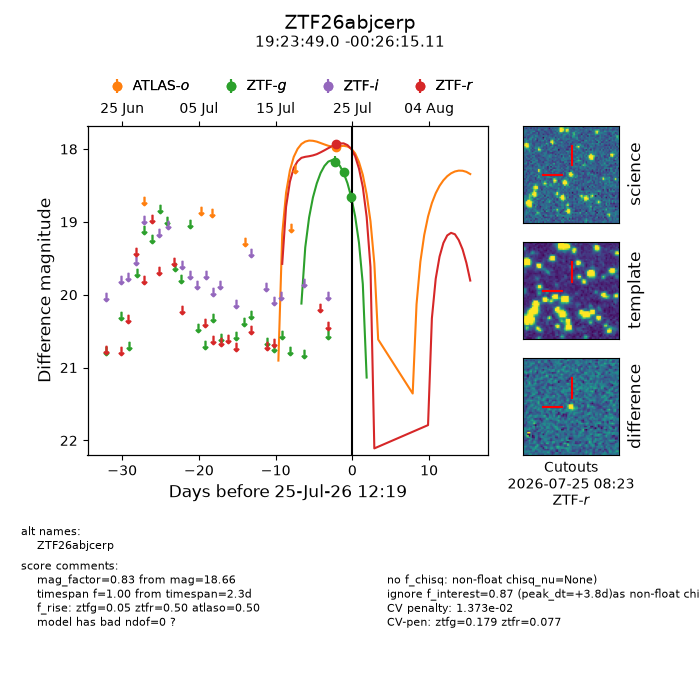
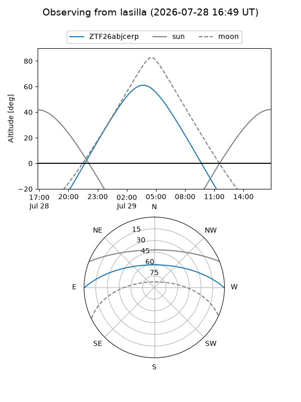
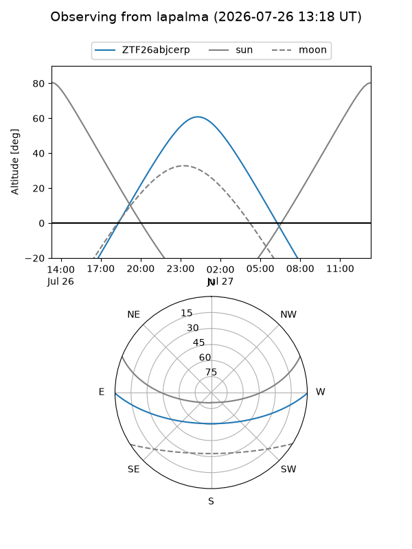
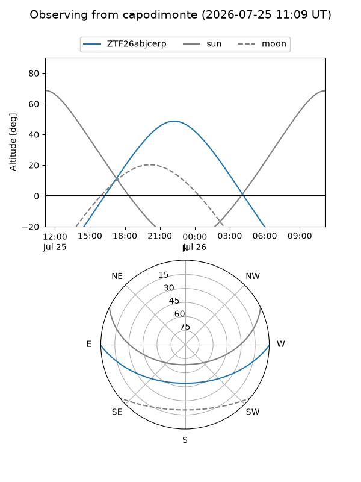
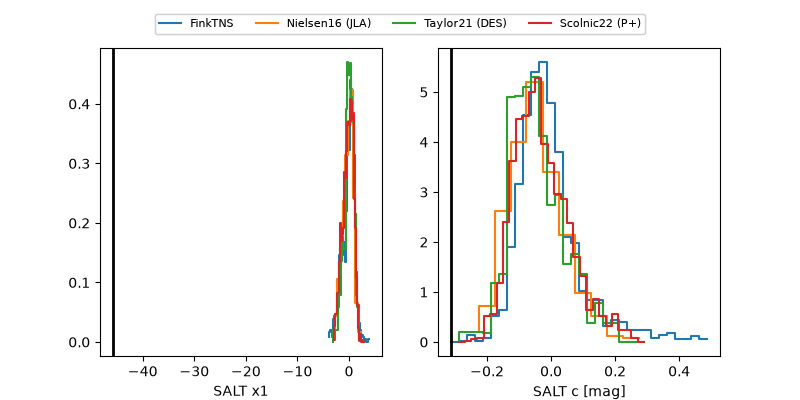

ZTF26abjcerp
Target ZTF26abjcerp at 2026-07-25 12:21
Aliases and brokers:
FINK-ZTF: ztf.fink-portal.org/ZTF26abjcerp
Lasair-ZTF: lasair-ztf.lsst.ac.uk/objects/ZTF26abjcerp
ALeRCE-ZTF: alerce.online/object/ZTF26abjcerp
Direct TNS query: direct search
alt names
ZTF26abjcerp (ztf,fink_ztf)
Coordinates:
equatorial (ra, dec) = 290.9540,-0.43753
equatorial (HMS+DMS) = 19:23:48.96,-00:26:15.11
galactic (l, b) = (36.2506,-7.39994)
Flags:
peak dt: +3.8
likely cv: !!
Photometry:
last atlaso=17.97, ztfg=18.66, ztfr=17.93
1 atlaso, 3 ztfg, 1 ztfr detections
Lightcurve

Visibility



Additional plots
